We will visualize the same 346 short-form videos used in the numeric summaries lecture. The dataset includes categorical variables such as platform and video format, and quantitative variables such as views, watch time, and audience size.
Definitions: Distribution and Frequency Tables
Definitions
The distribution of a variable describes which values the variable takes and how often it takes them.
A frequency table shows ranges of values of a variable and how many observations fall within each range.
Example: Frequency Table and Histogram for Views
First, bin the view counts and count how many videos fall in each bin:
ggplot(videos, aes(x = average_watch_time_seconds)) +geom_histogram(bins =20, fill ="steelblue", color ="white") +labs(x ="Average watch time (seconds)", y ="Frequency") +theme_minimal()
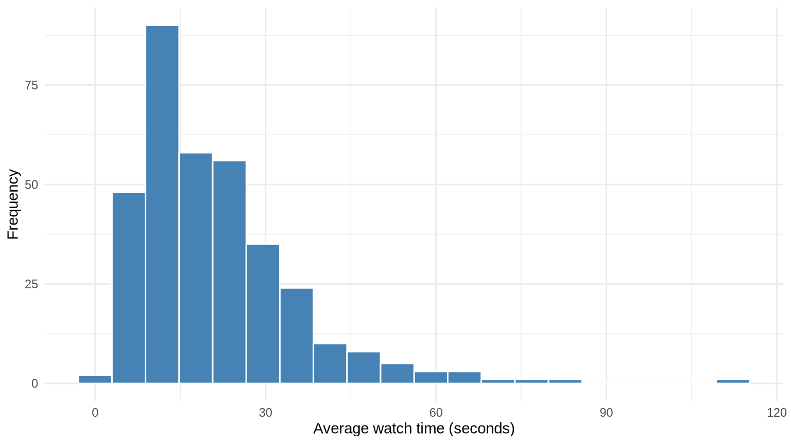
Practice: Audience Size Distribution
Create a frequency table and histogram for creator_audience_size.
The distribution is strongly right-skewed. The mean is much larger than the median because a few videos have very large share counts.
Definitions: Modality
Definition
Modality is the number of peaks in a distribution.
Unimodal: one peak.
Bimodal: two peaks.
Multimodal: more than two peaks.
When data are multimodal, a single measure of center or spread may hide important group structure.
Example: A Multimodal Distribution
Title length has several peaks. Many titles are short and punchy, while others are longer and more descriptive, so there is no single typical title length.
ggplot(videos, aes(x = title_length_words)) +geom_histogram(bins =25, fill ="steelblue", color ="white") +labs(x ="Title length (words)", y ="Frequency") +theme_minimal()
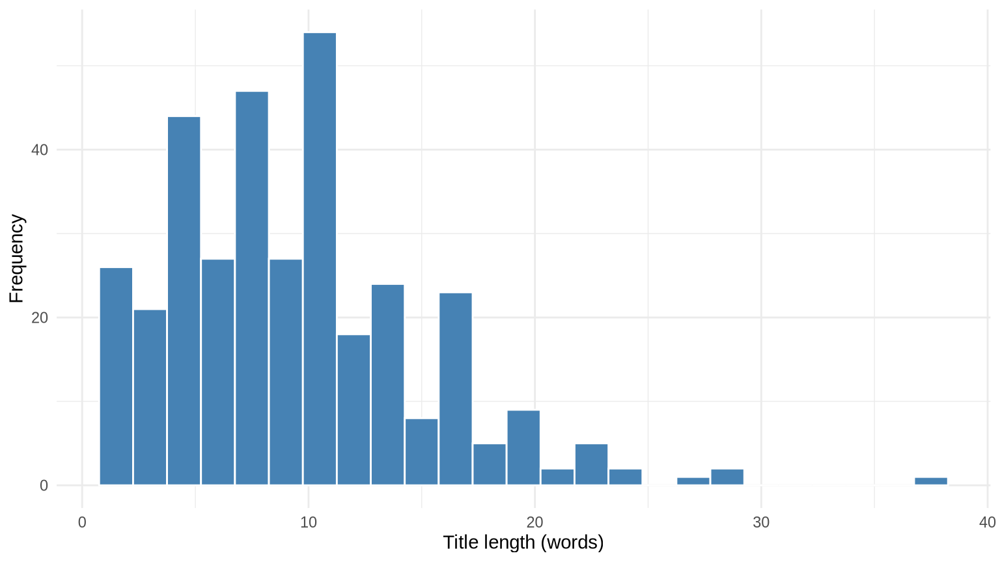
Example: A Unimodal Distribution
First-week views have one main peak, so the distribution is unimodal.
ggplot(videos, aes(x = views_first_7_days)) +geom_histogram(bins =25, fill ="steelblue", color ="white") +scale_x_continuous(labels = scales::comma) +labs(x ="First-week views", y ="Frequency") +theme_minimal()
Practice: Describing Modality
Create a histogram for average_watch_time_seconds. Is the distribution unimodal, bimodal, or multimodal?
Solution
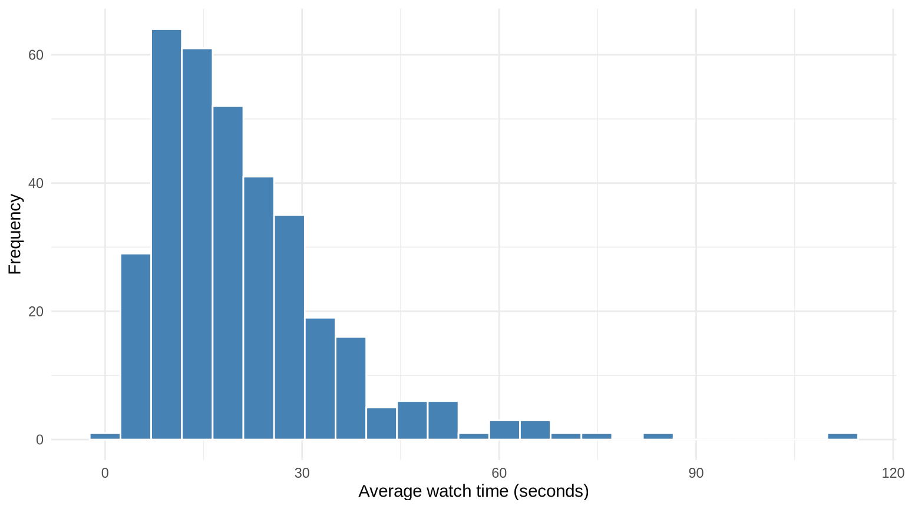
The distribution is unimodal, with a long right tail.
Definitions: Bar Charts
Definition
A bar chart displays a categorical variable by using bars whose lengths represent the proportion of observations in each category.
Example: Platform Proportions
videos |>count(platform) |>mutate(proportion = n /sum(n)) |>ggplot(aes(x = platform, y = proportion)) +geom_col(fill ="steelblue") +scale_y_continuous(labels = scales::percent) +labs(x ="Platform", y ="Proportion") +theme_minimal()
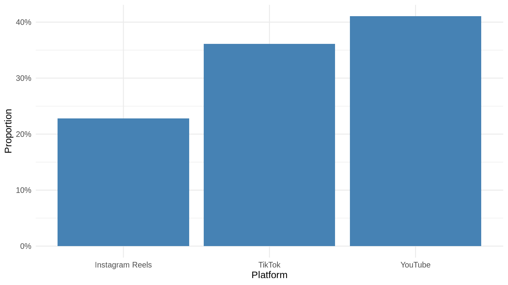
Example: Video Format Proportions
videos |>count(video_format) |>mutate(proportion = n /sum(n)) |>ggplot(aes(x =fct_reorder(video_format, proportion), y = proportion)) +geom_col(fill ="steelblue") +coord_flip() +scale_y_continuous(labels = scales::percent) +labs(x =NULL, y ="Proportion") +theme_minimal()
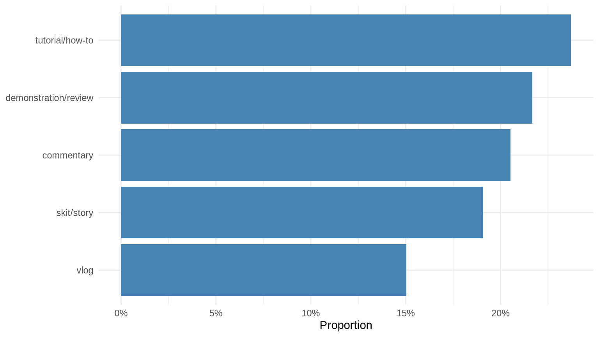
Practice: Bar Chart
Create a bar chart showing the proportion of videos in each topic.
Solution
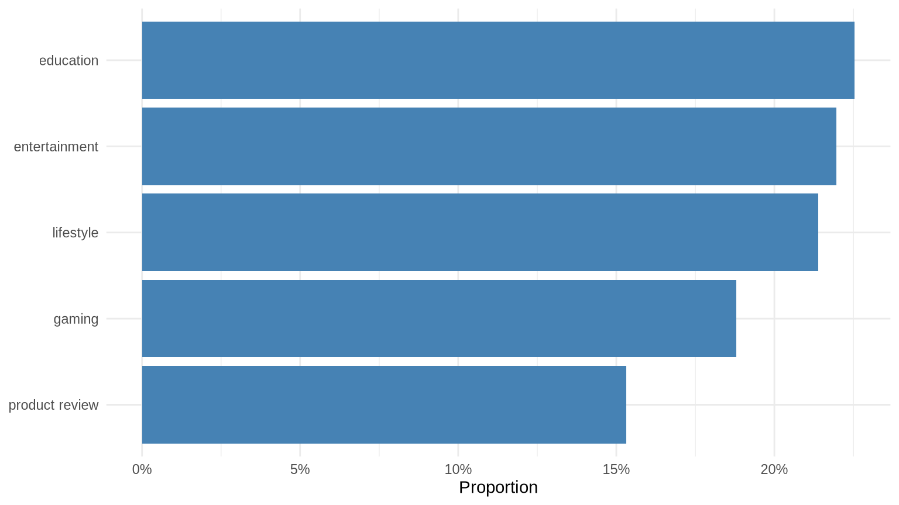
Definitions: Histograms
Definition
A histogram displays the distribution of a quantitative variable by grouping values into bins and showing the frequency or proportion of observations in each bin.
Example: Histogram of Views
ggplot(videos, aes(x = views_first_7_days)) +geom_histogram(bins =25, fill ="steelblue", color ="white") +scale_x_continuous(labels = scales::comma) +labs(x ="First-week views", y ="Frequency") +theme_minimal()
Example: Histogram of Audience Size
ggplot(videos, aes(x = creator_audience_size)) +geom_histogram(bins =25, fill ="steelblue", color ="white") +scale_x_continuous(labels = scales::comma) +labs(x ="Creator audience size", y ="Frequency") +theme_minimal()
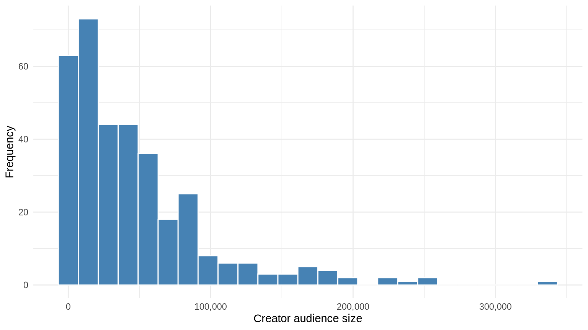
Practice: Histogram
Create a histogram for comments_first_7_days.
Solution
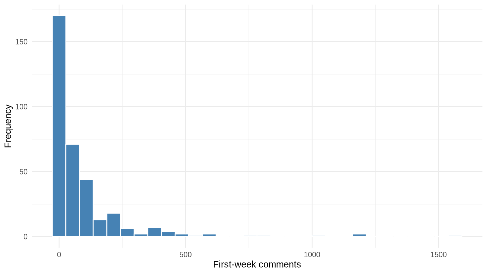
The histogram shows a strong right skew with a long tail of videos that received many comments.
Definitions: Box Plots
Definition
A box plot displays the five-number summary of a quantitative variable: the minimum, first quartile, median, third quartile, and maximum. It also marks observations that are flagged as outliers.
Example: Box Plot of Views
ggplot(videos, aes(y = views_first_7_days, x ="")) +geom_boxplot(fill ="lightblue", color ="black") +scale_y_continuous(labels = scales::comma) +labs(x =NULL, y ="First-week views") +theme_minimal()
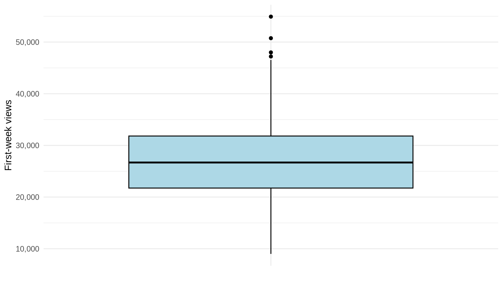
Example: Box Plot of Watch Time
ggplot(videos, aes(y = average_watch_time_seconds, x ="")) +geom_boxplot(fill ="lightblue", color ="black") +labs(x =NULL, y ="Average watch time (seconds)") +theme_minimal()
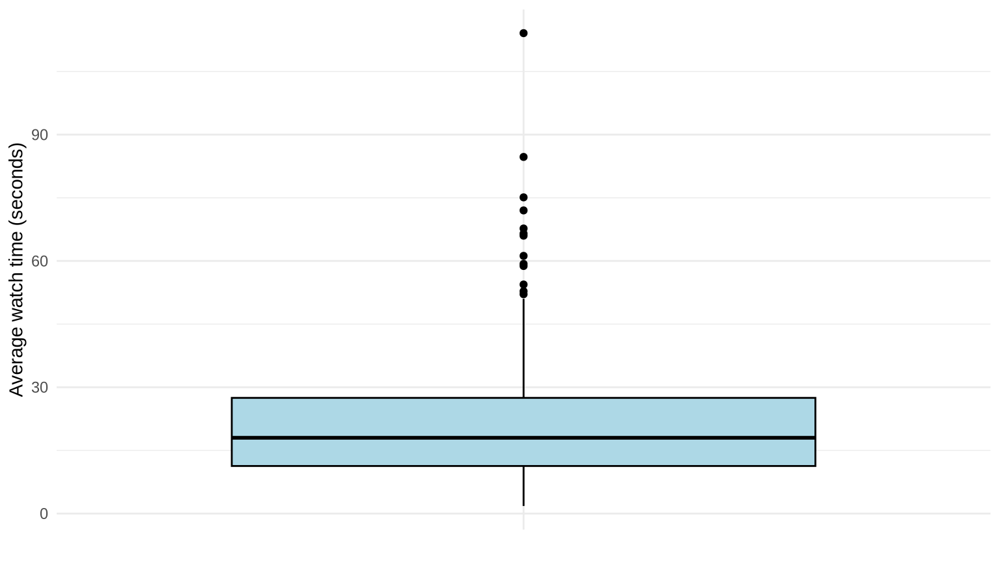
Practice: Box Plot
Create a box plot for creator_audience_size.
Solution
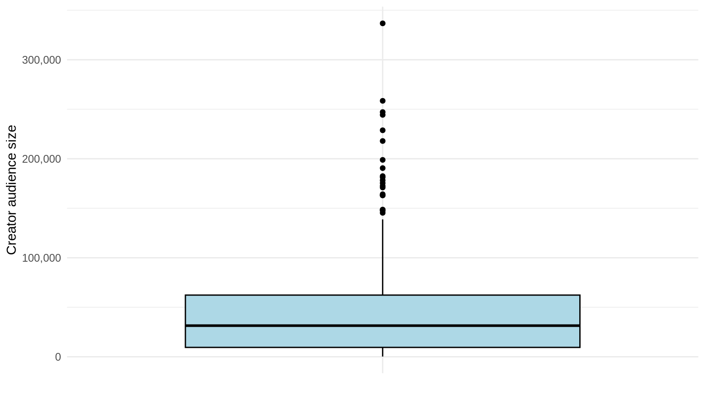
The box plot shows many high outliers, which is consistent with the strong right skew of audience size.
Bivariate Relationships
A bivariate relationship describes how two variables vary together.
When both variables are quantitative, a scatterplot displays the relationship.
When one variable is categorical and the other is quantitative, side-by-side box plots compare the quantitative distribution across categories.
Definitions: Scatterplots
Definition
A scatterplot displays one quantitative variable on the horizontal axis and another quantitative variable on the vertical axis. Each point represents one observation, making it possible to see the direction, strength, and shape of a relationship.
Example: Video Length and Watch Time
Longer videos tend to have longer average watch times.
ggplot(videos, aes(x = video_length_seconds, y = average_watch_time_seconds)) +geom_point(alpha =0.5) +labs(x ="Video length (seconds)", y ="Average watch time (seconds)") +theme_minimal()
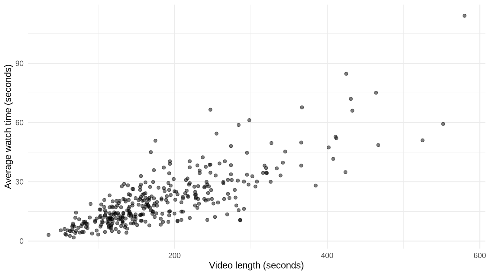
The points show a strong positive linear relationship.
Example: Video Length and Percentage Viewed
A longer video does not necessarily keep a larger percentage of its viewers.
ggplot(videos, aes(x = video_length_seconds, y = average_percentage_viewed)) +geom_point(alpha =0.5) +labs(x ="Video length (seconds)", y ="Average percentage viewed") +theme_minimal()
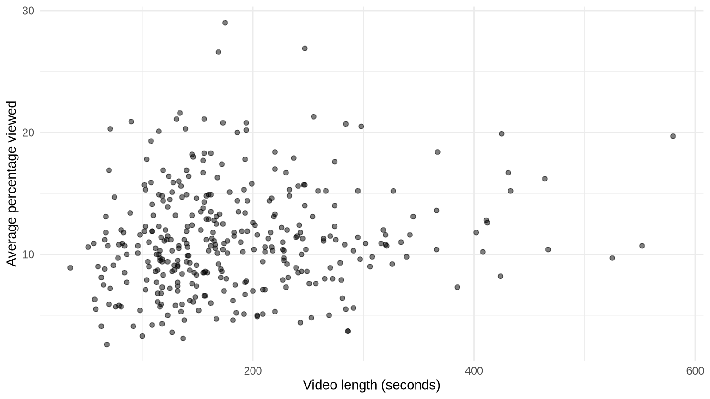
The relationship is much weaker, so the points do not follow a clear upward or downward pattern.
Practice: Scatterplot
Create a scatterplot of views_first_7_days versus likes_first_7_days and compute their correlation.
Solution
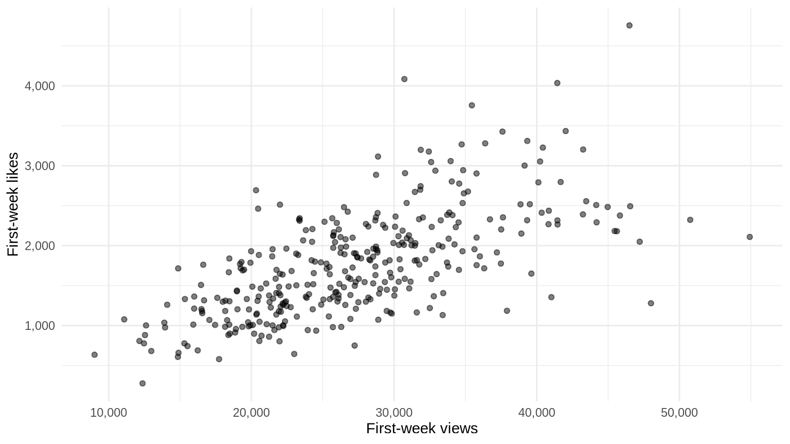
# A tibble: 1 × 1
r
<dbl>
1 0.655
The scatterplot shows a strong positive relationship, and the correlation is about 0.65.
Definitions: Side-by-Side Box Plots
Definition
Side-by-side box plots compare the distribution of a quantitative variable across the categories of a categorical variable. Each category gets its own box plot, making it easy to compare centers, spreads, and outliers.
Example: Watch Time by Platform
ggplot(videos, aes(x = platform, y = average_watch_time_seconds)) +geom_boxplot(fill ="lightblue", color ="black") +labs(x ="Platform", y ="Average watch time (seconds)") +theme_minimal()
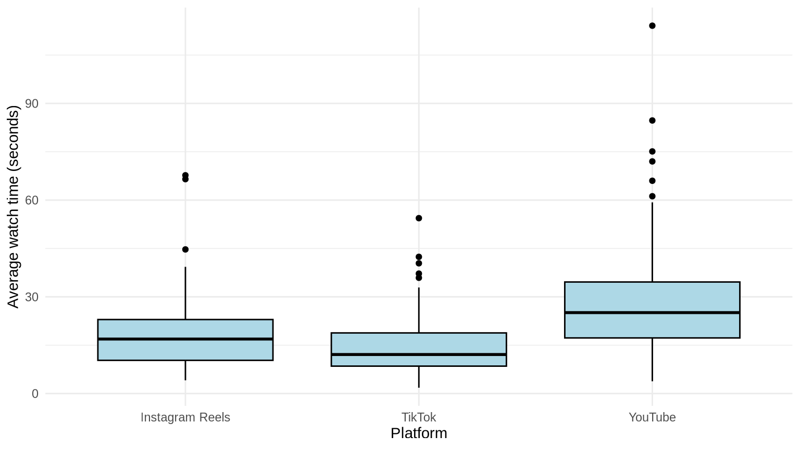
Example: Views by Video Format
ggplot(videos, aes(x = video_format, y = views_first_7_days)) +geom_boxplot(fill ="lightblue", color ="black") +scale_y_continuous(labels = scales::comma) +labs(x ="Video format", y ="First-week views") +theme_minimal() +theme(axis.text.x =element_text(angle =25, hjust =1))
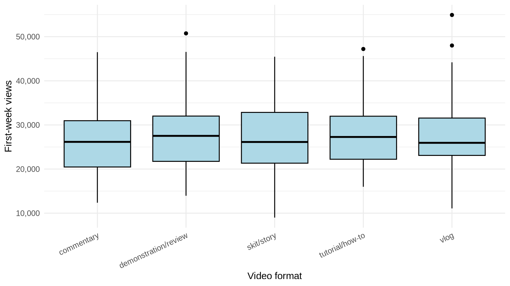
Practice: Side-by-Side Box Plots
Create side-by-side box plots of creator_audience_size by production_effort.
Solution
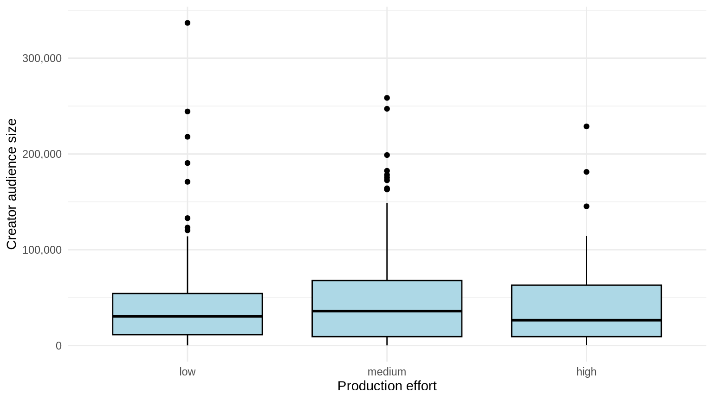
The groups have similar medians, but all groups contain high outliers and the distributions are right-skewed.
Practice: Choosing a Visualization
Match each question to the most appropriate visualization:
How are videos distributed across platforms?
What is the distribution of first-week views?
Do first-week views differ by platform?
Is there a relationship between video length and average watch time?
Do comment counts differ by video format?
Solution
Bar chart of platform proportions.
Histogram of first-week views.
Side-by-side box plots of views by platform.
Scatterplot of watch time versus video length.
Side-by-side box plots of comments by video format.